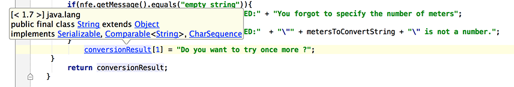

To navigate to the declaration of a class, method or variable used somewhere in the code, position the caret at the usage and press &shortcut:GotoDeclaration; (Navigate | Declaration). You can also click the mouse on usages with the Ctrl key pressed to jump to declarations.
